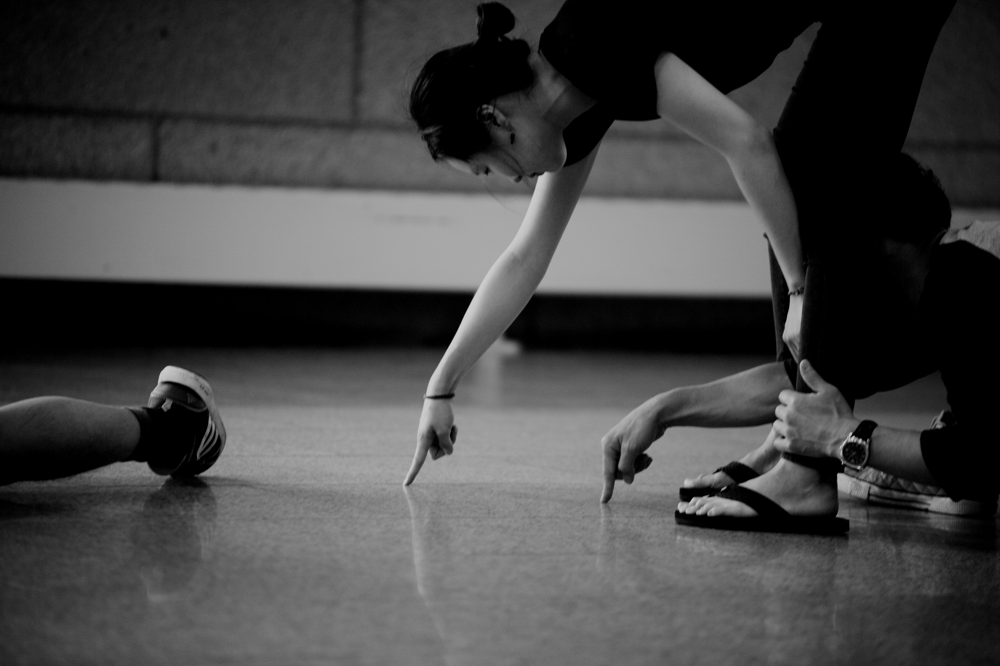

I am a designer, researcher, and digital artist in the RISD Digital+Media MFA program (class of 2019),
studying physical computing, design and creative coding.
My goal as designer is to make product that support people with emerging technologies like Voice User Interface (VUI) and Augmented Reality (AR).
I work at BluePrint-lab, developing AR virtual try-on solution for e-commerce service as a UX designer.
Previously, I worked at OPT Industries and makeithappen.nyc as UXUI designer.
Learn more about my art project from sayoungin.com, connect me on Linkedin.